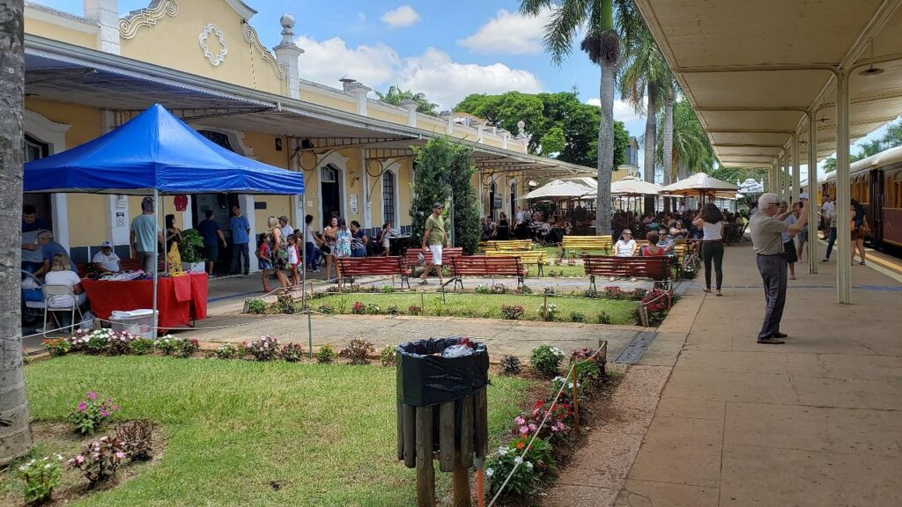
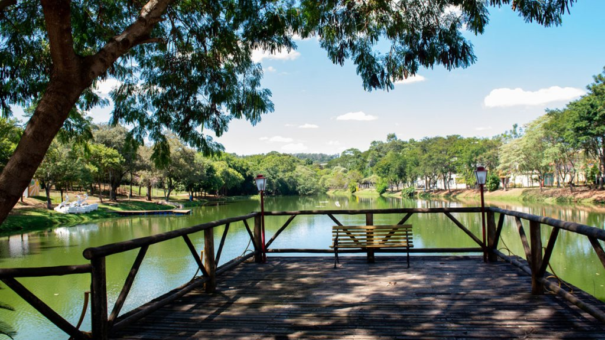

Naga Cable Park – Parque aquático especializado em esportes radicais, conhecido pelas pistas de wakeboard e eventos animados à beira do lago.
📍 Endereço: Av. Pacífico Moneda, 349 - Jardim Imperial, Jaguariúna - SP.

Jaguariúna, situada no interior paulista e parte da Região Metropolitana de Campinas, combina tradição e inovação. Conhecida como “Cidade Digital”, é referência em tecnologia e qualidade de vida, ao mesmo tempo em que preserva sua história ligada às ferrovias e à cultura caipira. Além disso, Jaguariúna se destaca pelo turismo de eventos, como o famoso rodeio, e por seu forte setor de serviços e indústrias.
Estação Ferroviária de Jaguariúna – Marco histórico da cidade, integra o passeio turístico da Maria Fumaça Campinas–Jaguariúna.
📍 Endereço: Rod. João Beira, 475-707 - Centro, Jaguariúna - SP.
Parque dos Lagos – Um dos principais espaços de lazer, com lagos, pistas de caminhada e áreas para prática de esportes.
📍 Endereço: R. Eduardo Tozi, s/n - Vila Doze de Setembro I, Jaguariúna - SP.
Naga Cable Park – Parque aquático especializado em esportes radicais, conhecido pelas pistas de wakeboard e eventos animados à beira do lago.
📍 Endereço: Av. Pacífico Moneda, 349 - Jardim Imperial, Jaguariúna - SP.